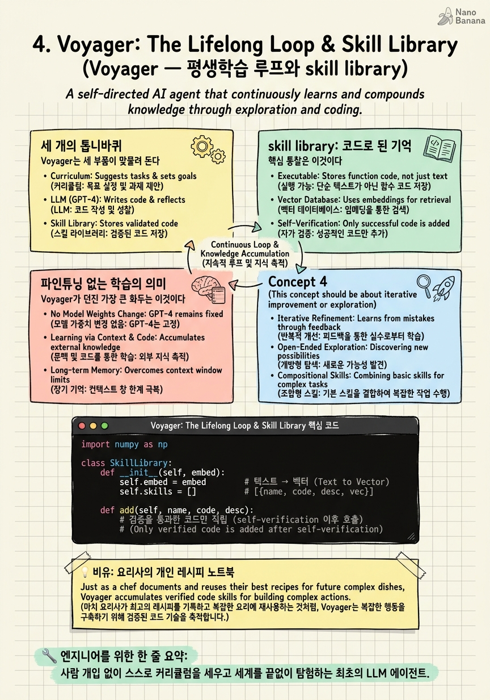

Voyager: The Lifelong Loop & Skill Library

🎯 학습 목표
- Voyager의 세 축(자동 커리큘럼·skill library·반복 프롬프팅)을 설명한다
- 'skill을 실행 가능한 코드로 저장'하는 것이 왜 강력한 기억 형태인지 이해한다
- 파인튜닝 없이 blackbox API만으로 평생학습이 가능한 원리를 안다
- skill library를 임베딩으로 검색·조합하는 메커니즘을 구현할 수 있다
- 3장의 반성 메모리와 4장의 skill 메모리의 차이를 구분한다
3장의 Reflexion은 '실패의 교훈'을 텍스트로 기억했다. 하지만 교훈은 추상적이다. 더 강력한 기억은 없을까? Voyager(Wang et al., NeurIPS 2023 워크숍, 이후 TMLR)의 답은 대담하다. 성공한 행동을 실행 가능한 코드 그 자체로 저장하라.
Voyager는 마인크래프트 속에서 사는 최초의 LLM 기반 '평생학습 에이전트(lifelong learning agent)'다. 사람이 목표를 주지 않아도 스스로 '이번엔 나무를 캐볼까 → 다음엔 돌 곡괭이를 만들까'식으로 커리큘럼을 세우고, 세계를 끝없이 탐험한다. 놀랍게도 GPT-4를 blackbox API로만 쓴다 — 파라미터를 단 하나도 파인튜닝하지 않는다.
비결은 두 가지다. 첫째, 환경 피드백·실행 에러·자기검증을 되먹이는 반복 프롬프팅 루프(2·3장의 종합). 둘째, 성공적으로 작동한 행동을 실행 가능한 코드 함수로 skill library에 저장하고, 나중에 비슷한 상황에서 임베딩으로 검색해 꺼내 쓰는 것. 경험이 날아가지 않고 재사용 가능한 도구로 굳는다. 이 장에서 우리는 '루프에 영구 기억을 붙이는' 방법을 배운다.
핵심 내용
세 개의 톱니바퀴
Voyager는 세 부품이 맞물려 돈다.
자동 커리큘럼(automatic curriculum) = '지금 내 능력에서 적당히 도전적인 다음 목표'를 GPT-4가 스스로 제안한다. 너무 쉽지도 어렵지도 않은 과제를 연속으로 던져 탐험을 극대화한다. 사람의 목표 지정이 필요 없다.
반복 프롬프팅 메커니즘(iterative prompting) = 목표를 코드로 구현 → 실행 → 결과를 본다. 논문의 표현으로는 환경 피드백, 실행 에러, 그리고 self-verification(자기검증) 을 프로그램 개선에 되먹인다. 3장 Self-Refine의 마인크래프트판이다.
"a new iterative prompting mechanism that incorporates environment feedback, execution errors, and self-verification for program improvement."
skill library = 검증을 통과한 코드를 영구 저장하는 창고. 이 세 번째가 Voyager의 진짜 혁신이라 별도 섹션에서 다룬다. 셋의 흐름은: 커리큘럼이 목표를 던지고 → 반복 루프가 코드를 완성하고 → 완성된 코드가 라이브러리에 적립된다.
skill library: 코드로 된 기억
핵심 통찰은 이것이다. 기억을 '설명'이 아니라 '실행 가능한 코드'로 저장하면, 재사용이 완벽해진다.
"an ever-growing skill library of executable code for storing and retrieving complex behaviors."
예를 들어 Voyager가 '돌 곡괭이 만들기'를 성공하면, 그 절차를 craftStonePickaxe()라는 자바스크립트 함수로 정제해 저장한다. 나중에 '철 곡괭이 만들기'라는 더 복잡한 목표가 오면, 라이브러리에서 craftStonePickaxe를 꺼내 조합해 더 큰 함수를 만든다. 기술이 레고 블록처럼 쌓인다.
검색은 임베딩으로 한다. 각 skill을 그 기능 설명의 임베딩으로 색인해두고, 새 상황이 오면 의미적으로 가까운 skill을 top-k로 꺼낸다. 이건 사실상 자기가 만든 도구를 자기가 검색해 쓰는 RAG다.
이 방식의 위력은 세 가지다. (1) 복리 효과 — 스킬이 쌓일수록 더 복잡한 걸 더 빨리 해낸다. (2) 해석 가능성 — 기억이 사람이 읽을 수 있는 코드라 디버깅이 된다. (3) 이식성 — 라이브러리를 통째로 새 에이전트에 옮겨 부팅할 수 있다. 3장의 텍스트 반성이 '교훈 노트'라면, Voyager의 skill은 '완성된 연장'이다.
파인튜닝 없는 학습의 의미
Voyager가 던진 가장 큰 화두는 이것이다. 학습이 반드시 가중치 안에서 일어나야 하는가?
"Voyager interacts with GPT-4 via blackbox queries, which bypasses the need for model parameter fine-tuning."
전통적 관점에서 '모델이 배운다'는 건 파라미터가 바뀌는 것이다. Voyager는 정반대를 증명했다. 모델(GPT-4)은 얼어붙어 있는데도, 외부에 쌓이는 skill library 때문에 에이전트 전체는 계속 유능해진다. 학습이 모델의 무게가 아니라 루프를 감싼 외부 메모리에서 일어난 것이다.
이건 loop engineering의 세계관을 정확히 대변한다. 모델은 고정된 '추론 엔진'이고, 지능의 성장은 그 엔진을 감싼 루프·메모리·도구의 설계에서 나온다. 6장에서 볼 Anthropic의 '에이전트 = 루프' 명제가 여기서 이미 실증되고 있다. 값비싼 재훈련 대신, 잘 설계된 루프와 축적되는 메모리가 같은 목적지에 — 때로 더 유연하게 — 도달한다.
물론 한계도 분명하다. 고정된 모델의 능력 상한을 넘진 못하고, skill library가 커지면 검색 정확도와 컨텍스트 관리가 새 병목이 된다(→ 7장). 하지만 '학습 = 외부 축적'이라는 패러다임의 문을 연 공은 온전히 Voyager의 것이다.
💡 비유로 이해하기
견습 요리사를 생각해보자. 3장의 Reflexion식 요리사는 '오늘 소스가 짰다. 다음엔 소금을 줄이자' 같은 교훈을 메모한다. 유용하지만, 다음에 그 요리를 할 때 여전히 처음부터 감으로 만들어야 한다.
Voyager식 요리사는 다르다. 어떤 요리를 성공하면, 그 정확한 레시피를 계량까지 적어 레시피북에 정서해둔다 — '토마토 소스: 양파 반 개, 마늘 2쪽, 3분 볶고…'. 다음에 그 소스가 필요하면 레시피를 그대로 펼쳐 완벽히 재현한다. 더 나아가 '라자냐'라는 큰 요리를 할 땐, 레시피북에서 '토마토 소스'와 '베샤멜 소스' 페이지를 꺼내 조합한다. 이미 완성된 서브레시피들이 블록처럼 결합된다.
결정적인 건 이 요리사가 더 똑똑해진 게 아니라 레시피북이 두꺼워졌다는 점이다. 두뇌(모델)는 그대로인데, 외부 노트(skill library)가 쌓여서 점점 복잡한 요리를 척척 해낸다. 그리고 이 레시피북은 후배에게 통째로 물려줄 수도 있다. Voyager가 증명한 건 — 성장은 머리가 아니라 잘 정리된 노트에서 올 수 있다는 것이다.
💻 코드 예시
Voyager식 skill library의 뼈대를 구현해보자. 핵심은 세 동작이다 — 성공한 코드를 임베딩과 함께 저장하고, 새 목표에 의미적으로 가까운 skill을 검색하고, 그것들을 컨텍스트에 넣어 새 코드를 합성한다. 자기가 만든 도구를 자기가 검색해 쓰는 RAG 루프다.
import numpy as np
class SkillLibrary:
def __init__(self, embed):
self.embed = embed # 텍스트 → 벡터
self.skills = [] # [{name, code, desc, vec}]
def add(self, name, code, desc):
# 검증을 통과한 코드만 적립 (self-verification 이후 호출)
self.skills.append({"name": name, "code": code,
"desc": desc, "vec": self.embed(desc)})
def retrieve(self, goal, k=3):
if not self.skills:
return []
q = self.embed(goal)
sims = [(np.dot(q, s["vec"]), s) for s in self.skills]
return [s for _, s in sorted(sims, reverse=True)[:k]] # top-k 조합 재료
def voyager_step(goal, lib, llm, env):
reusable = lib.retrieve(goal) # 1) 관련 skill 검색
primer = "\n\n".join(s["code"] for s in reusable) # 조합할 블록들
code = llm(f"기존 skill:\n{primer}\n\n목표: {goal}\n"
"위 skill들을 활용해 목표를 달성하는 함수를 작성하라.")
result = env.run(code) # 2) 실행 = 자기검증
if result.success:
lib.add(result.fn_name, code, goal) # 3) 성공하면 적립 (복리!)
return result
이 20여 줄에 Voyager의 정수가 들어 있다. (1) 검증 후 적립 — env.run이 성공(self-verification)해야만 lib.add로 저장한다. 검증되지 않은 코드를 라이브러리에 넣으면 오염된 기억이 미래를 망친다. (2) 조합(composition) — 검색된 기존 skill들의 코드를 프롬프트에 primer로 넣어, 새 코드가 그것들을 '호출해 재사용'하게 유도한다. 이게 스킬을 레고처럼 쌓는 복리 메커니즘이다. (3) 임베딩 검색 — 라이브러리가 커져도 관련된 것만 top-k로 꺼내 컨텍스트를 아낀다(7장 예고). 3장의 메모리는 '실패 교훈 텍스트'였지만, 여기 메모리는 '성공 코드'라 재사용 시 재현율이 100%다 — 텍스트 교훈은 다시 해석해야 하지만, 코드는 그냥 호출하면 된다.
🏭 현업에서의 평가
✅ 시니어가 보는 것
- 기억을 실행 가능한 코드로 저장하는 것의 장점(재현율·조합성·이식성)을 설명
- '학습 = 파라미터 변경'이 아니라 '외부 메모리 축적'일 수 있음을 이해
- 검증되지 않은 산출물을 메모리에 넣으면 안 된다는 위생 감각(오염 방지)
- skill library가 커질 때의 검색 정확도·컨텍스트 관리 병목을 예상
⚠️ 레드 플래그
- 메모리를 그냥 '대화 로그를 벡터DB에 다 넣기'로만 생각
- 검증 없이 에이전트 산출물을 무조건 메모리에 적립 (오염 위험 무시)
- 고정 모델 + 외부 메모리로도 학습이 일어난다는 점을 이해 못 함
- 라이브러리 성장에 따른 검색/컨텍스트 병목을 고려하지 않음
🎤 예상 인터뷰 질문
- 에이전트의 기억을 텍스트 교훈, 실행 가능한 코드, 파인튜닝 중 무엇으로 저장할지 어떤 기준으로 정하나?
- 파인튜닝 없이 blackbox 모델만으로 에이전트가 '학습'한다는 게 무슨 의미인가?
- skill library가 수천 개로 커지면 어떤 문제가 생기고 어떻게 대응하겠는가?
✨ 핵심 요약
평생학습 루프
사람 개입 없이 스스로 커리큘럼을 세우고 세계를 끝없이 탐험하는 최초의 LLM 에이전트.
코드로 된 기억
성공한 행동을 실행 가능한 코드로 저장하면 재현율 100% + 조합 가능 + 이식 가능.
복리 효과
skill이 쌓일수록 그것들을 조합해 더 복잡한 목표를 더 빨리 해낸다.
파인튜닝 없는 학습
모델은 고정, 외부 메모리가 성장 — 학습이 루프를 감싼 메모리에서 일어난다.
self-verification
실행 결과로 코드를 검증하고, 통과한 것만 라이브러리에 적립(오염 방지).
skill = 자기제작 RAG
임베딩으로 자기가 만든 도구를 검색해 재사용 — 도구 창고이자 검색 시스템.
새 병목 예고
라이브러리가 커지면 검색 정확도와 컨텍스트 관리가 다음 과제가 된다(→7장).